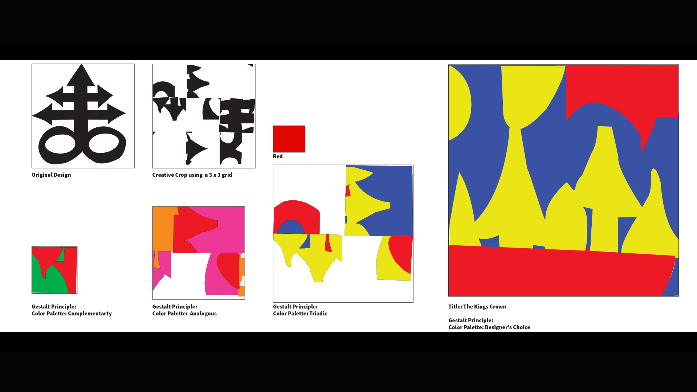
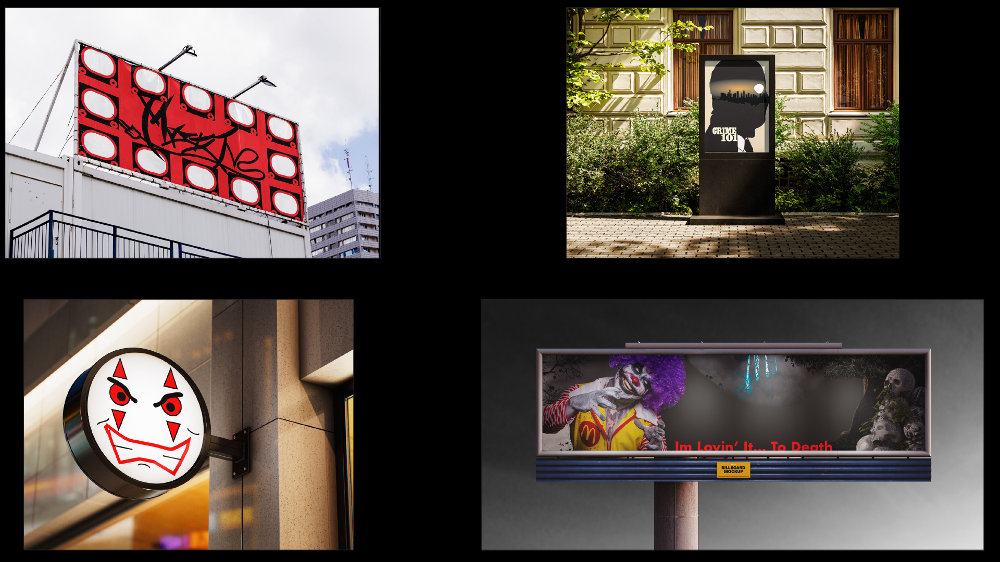
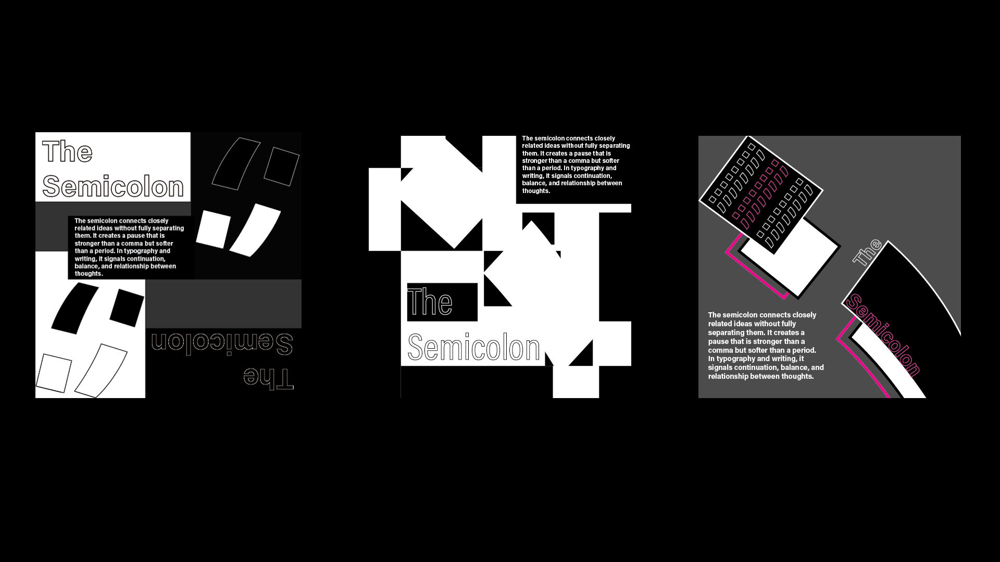
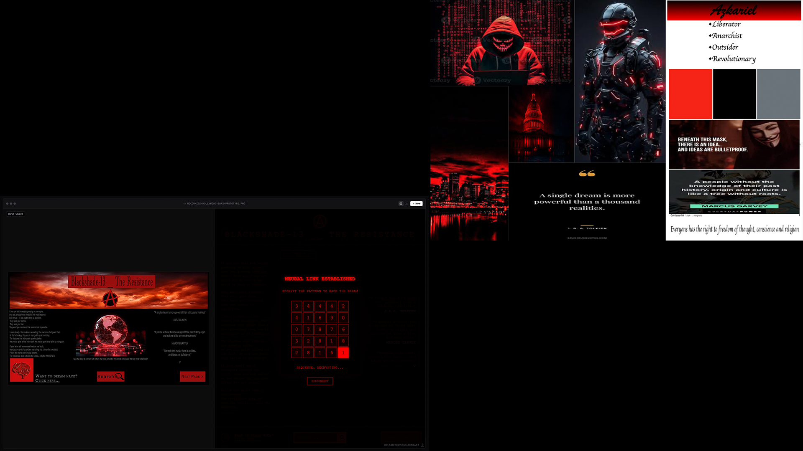
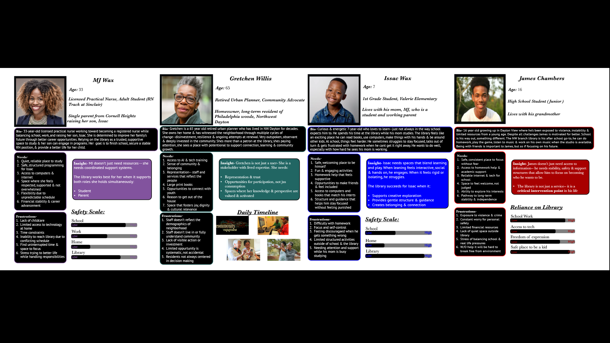
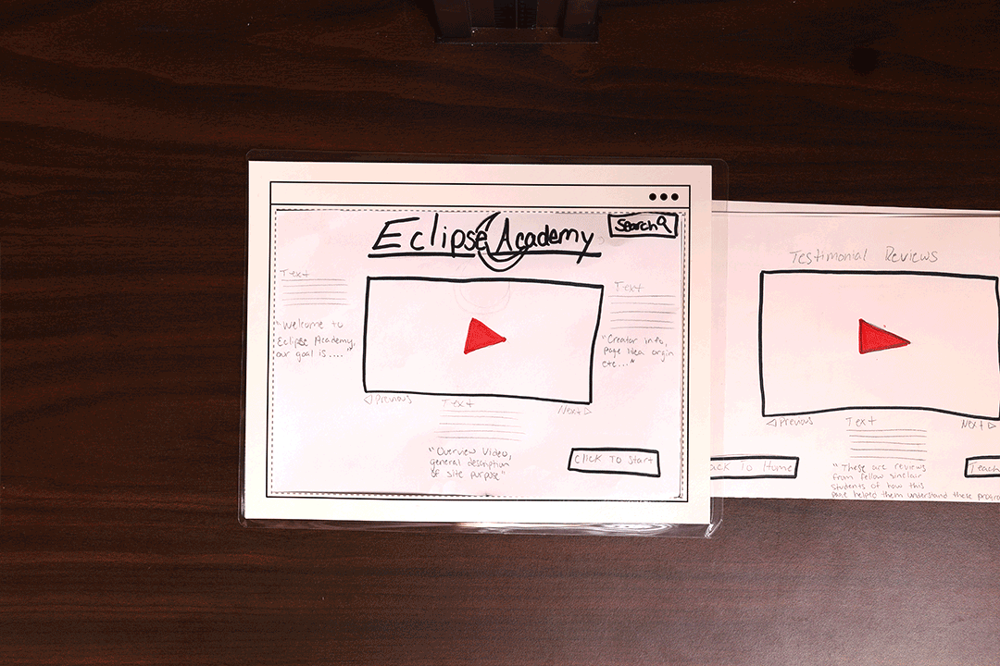

I’m an emerging UX and graphic designer with a strong work ethic and background in customer service
seeking to contribute to team success while developing skills in user centered design & visual
communications. I have an interest in fashion and I am the owner and CEO of my own clothing brand;
BlackHaloApparelCo so I have an entrepreneurial mindset.
About
Experience that supports clarity and growth.
I have previous work experience in ANS Towing & Recovery supporting mechanics
with vehicle repairs and maintainance, contributing to an efficient workflow in a busy shop
environment. I have also worked at Buffalo Wild Wings, Peaches Bar & Grill,
McDonald’s, Klostermans Bakery and Eby-Brown Company
maintaining an organized workspace to support safety & efficiency in daily operations.
These roles have helped me build strong communication, teamwork, and problem-solving skills that I
now bring into UX and graphic design, focusing on clear, thoughtful, and user-centered experiences.
Projects
Selected work with process, reflection, and interactive examples.
Color and Composition: Integrating Principles, Elements & Gestalt

The objective of this project was to create a new design using an image cut up and cropped from previous projects using the integration of Principles, Elements, and Gestalt. The process was to select an image, crop it into nine new images and use those pieces to create a new design. The challenge for me here was that at the start of this project was my first time ever using Adobe Illustrator so the initial project we had to work with did not turn out as well as I envisioned which made the final product look rough in my opinion
Mockups

The objective of this project was to take projects we created on Adobe Illustrator and Photoshop and place them on mockup designs. The process for this was simple; choose mockups we liked and thought best fit for our designs and embed them as smart objects. I enjoyed this project overall, it was cool to see my final products that I worked hard on, on something that might exist in the real world. All four of the previous projects that it took to complete the mockups were all new experiences for me.
Grids

The objective with this project was to understand how to identify and use column, modular and anti-grids.
The process for this was to sketch 12 roughs of each type of grid structure, choose our best five and create digital roughs of those and then one final for each structure.
This project challenged me having to stick to the strict grid because the designs I wanted to create kept breaking the grid. I felt very constrained when using the column grid opposed to modular and anti-grid but overall it was a learning experience that I believe turned out well.
HTML(How to tomorrow might look); The web in 2045

The objective was to look into what the future of web design might look like and its users.
The process for this was to create a mood board using a persona we created based in the year 2045 and basically come up with a backstory. I then used an AI webpage generator to create a futuristic webpage that would present a solution for the problems users were facing in my fictional future.
I had a lot of fun with this project, it allowed me to express myself and incorporate my style in the design while still achieving the goal of problem solving.
Personas

The objective was to provide a visual artifact the Dayton Metro Library could use to understand who uses their library and present this data to their administration.
The process for this was a long one with a lot of work and various methods of data gathering being used. Observations, interviews, empathy mapping and deep thinking went into this project.
Ultimately, the outcome of this project was wonderful. We collected any bit of information we could, created 4 real life based personas with that data and gave a professional presentation to library admins as well as staff.
Clear is Kind

The objective for this was to use a persona to identify the problem she was having and create a website she could use to solve this issue.
The process here was to come up with a website idea that would solve this issue. From there I used “Crazy 8s” to get my final rough idea mapped out and then I could start designing the paper prototype. After getting that together I had the prototype tested by fellow Sinclair students. After initial testing I moved into the digital design phase using Figma to get my digital rough. Those same students tested the digital rough and I made changes/improvements where necessary
This was challenging for me because it really forced me to break out of my normal “theme” of things and create something that was more universally “user friendly” since it was being tested by real life people I had real life constraints to work around.
Education
Design foundations and studies in human behavior.
Associate of Applied Science, Digital Media Design
Sinclair Community College · Anticipated May 2027
I will have an Associates Degree of Applied Science in Digital Media Design anticipated May 2027
from Sinclair Community College, focusing on digital media, visual communication, and design
principles that support user-centered experiences.
Additional Studies
Clark State Community College
I also have studies in Law Enforcement/Criminal Justice, Psychology and Sociology from Clark State
Community College, giving me insight into people, systems, and behavior that informs my approach to
UX and visual design.